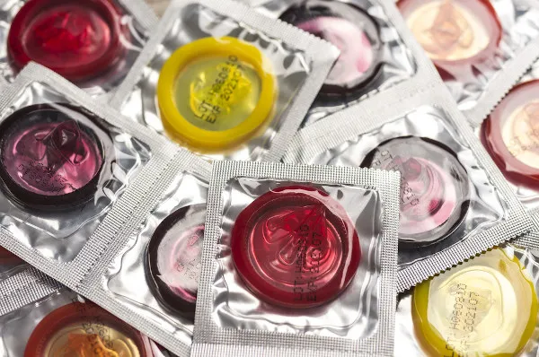
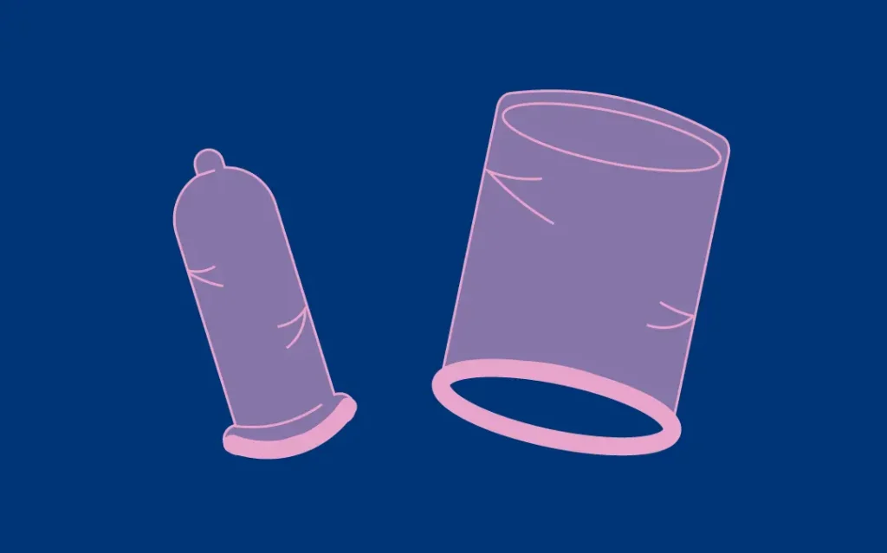
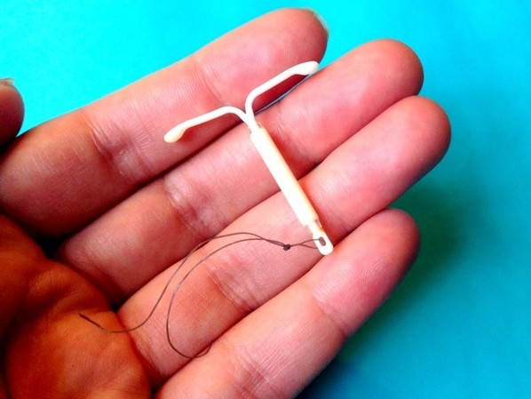

<!DOCTYPE html>
<html lang="pt-br"></html>
<head>
    <meta charset="UTF-8">
    <meta http-equiv="X-UA-Compatible" content="IE=edge">
    <meta name="viewport" content="width=device-width, initial-scale=1.0">
    <link rel="stylesheet" href="style.css">
    <!--box icons-->
    <link href='https://unpkg.com/boxicons@2.1.4/css/boxicons.min.css' rel='stylesheet'>
    <title>Contraceptivos de barreira</title>

</head>
<body>
    <!--Cabeçalho-->
    <header>
        <!--Navegação-->
        <div class="nav container">
        <!--Logo-->
        <a href="index.html" class="logo">Loucos por <span>pontos</span></a>
        <!--Botão de Login-->
        <a href="index.html" class="login">Início</a>
        </div>
    </header>

    <!--Conteúdo do Post-->
    <section class="post-cabecalho">
        <div class="conteudo-cabecalho post-container">
            <!--Voltar Para a Home-->
            <a href="index.html" class="voltar-home">Voltar para Home</a>
            <!--Título-->
            <h1 class="cabecalho-titulo">Métodos de Barreira: O que são e como funcionam?</h1><!--Falta alterar o título do cabeçalho-->
            <!--Imagem do Post-->
            
        </div>
    </section>

    <!--Posts-->
    <section class="post-conteudo post-container">
        <h2 class="sub-titulo">Sobre os métodos contraceptivos</h2>
        <p class="post-texto">Os contraceptivos de barreira impedem a entrada do esperma no útero. Eles incluem preservativo, diafragma, capuz cervical e esponja contraceptiva. Alguns preservativos contêm espermicidas. Os espermicidas devem ser utilizados com os preservativos e outros contraceptivos de barreira que não os contenham.</p>
        <p class="post-texto">Os métodos de barreira podem ser masculinos ou femininos e alguns deles também podem ser bastante eficazes na prevenção de doenças sexualmente transmissíveis (DSTs), por impedir o contato entre os órgãos sexuais, como é o caso das <a href="#">camisinhas masculina e feminina.</a></p>
        <p class="post-texto">Observe a eficácia de alguns métodos de barreira contra a gravidez: preservativos(90-95%), diafragmas(90%), capuzes cervicais(84%), géis contraceptivos(86-93%), esponjas contraceptivas(60-80%) e espermicidas(em espuma, creme e supositórios)(71%).</p>
    </section>


    <!--Compartilhamento-->
    <div class="compartilhar post-container">
        <span class="compartilhar-titulo">Compartilhe esse artigo</span>
        <div class="social">
            <a href="https://www.instagram.com/infoweb_2022/" target=”_blank”><i class='bx bxl-instagram'></i></a>
            <a href="https://www.facebook.com/?locale=pt_BR" target=”_blank”><i class='bx bxl-facebook'></i></a>
        </div>
        <h2 class="sub-titulo">Veja abaixo mais posts sobre esse tema</h2>
    </div>

    <!--Posts-->
    <section class="post container">
        <!--Caixa Post 2-->
        <div class="post-caixa barreira">
            
            <h2 class="categoria">Barreira</h2>
            <a href="barreira.html" class="post-titulo">Métodos de barreira</a>
            <p class="post-descricao">
                Os contraceptivos de barreira impedem a entrada do esperma no útero. Eles incluem preservativo, diafragma, capuz cervical e esponja contraceptiva. Alguns preservativos contêm espermicidas.
            </p>
        </div>

        <!--Caixa Post 5-->
        <div class="post-caixa barreira">
            
            <h2 class="categoria">Barreira</h2>
            <a href="post 5 preservativos.html" class="post-titulo">Preservativos</a>
            <p class="post-descricao">Existem dois tipos de camisinha(preservativo): a masculina, que é feita de látex e deve ser colocada no pênis ereto antes da penetração; e a feminina, que é feita de latex ou borracha nitrílica e é usada internamente na vagina.</p>
        </div>

        <!--Caixa Post 8-->
        <div class="post-caixa barreira">
            
            <h2 class="categoria">Barreira</h2>
            <a href="post 8 diafragma.html" class="post-titulo">Diafragma</a>
            <p class="post-descricao">O diafragma é uma capinha de borracha bem fina, que a mulher coloca, ela mesma, no fundo da vagina, antes da relação sexual, tapando, assim, o colo do útero.</p>
        </div>

        <!--Caixa Post 10-->
        <div class="post-caixa barreira">
            
            <h2 class="categoria">Barreira</h2>
            <a href="post 10 espermicida.html" class="post-titulo">Espermicida</a>
            <p class="post-descricao">Os espermicidas são preparações que matam o espermatozoide ao contato. Estão disponíveis sob a forma de espumas, cremes, géis e supositórios e são colocados na vagina antes da relação sexual.</p>
        </div>        

        <!--Caixa Post 13-->
        <div class="post-caixa barreira">
            
            <h2 class="categoria">Barreira/Intrauterino</h2>
            <a href="post 13 diu.html" class="post-titulo">DIU</a>
            <p class="post-descricao">O DIU é um pequeno dispositivo, geralmente em forma de T, que é inserido no útero para prevenir a gravidez.</p>
        </div> 
    </section>

    <section class="post container">
        <p>Veja também outros métodos, como: <a href="hormonais.html">métodos hormonais, </a><a href="cirurgico.html">métodos cirurgico e </a><a href="comportamental.html">métodos comportamentais.</a></p>  
    </section>

    <!--Rodapé-->
    <div class="rodape container">
        <p>Copyright &#169 2024.</p>
        <div class="social">
            <a href="https://www.instagram.com/infoweb_2022/" target=”_blank”><i class='bx bxl-instagram'></i></a>
            <a href="https://www.facebook.com/?locale=pt_BR" target=”_blank”><i class='bx bxl-facebook'></i></a>
        </div>
    </div>

    <!--JQuary Link-->
    <script
  src="https://code.jquery.com/jquery-3.7.1.js"
  integrity="sha256-eKhayi8LEQwp4NKxN+CfCh+3qOVUtJn3QNZ0TciWLP4="
  crossorigin="anonymous"></script>
    <!--Link do JavaScript-->
    <script src="main.js">
    </script>
</body>
</html>